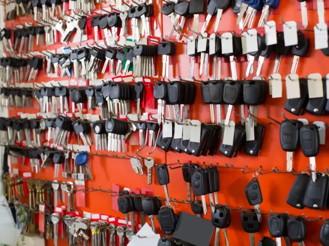

De onmisbare rol van slotenmakers in Nijmegen
Gepubliceerd op 27 november 2025

Nijmegen, een stad vol historie en charme, heeft net als elke andere stad zijn eigen uitdagingen op het gebied van veiligheid en woningbeveiliging. Of je nu een trotse inwoner bent of net verhuisd, de rol van slotenmakers in Nijmegen is cruciaal voor je gemoedsrust. Laten we eens duiken in de wereld van slotenmakers en ontdekken waarom ze zo belangrijk zijn.
Hulp bij buitensluiting: een redder in nood
Wat te doen bij buitensluiting?
Stel je voor: je komt thuis na een lange dag werken, graait in je tas en realiseert je dat je sleutels nog binnen liggen. Paniek! Gelukkig staat er altijd een slotenmaker in Nijmegen klaar om je te helpen. Deze professionals zijn getraind om snel en efficiënt toegang tot je woning te verschaffen zonder schade aan te richten.
24/7 beschikbaarheid
Een van de grootste voordelen van slotenmakersdiensten is hun 24/7 beschikbaarheid. Of het nu midden in de nacht is of tijdens feestdagen, je kunt altijd rekenen op snelle hulp. Dit is vooral handig in noodsituaties waar elke minuut telt.
Oplossen van slotproblemen: deskundigheid en vakmanschap
Veelvoorkomende slotproblemen
Sloten kunnen om verschillende redenen problemen veroorzaken. Misschien draait de sleutel niet meer soepel, of misschien is het slot zelf beschadigd door slijtage of een poging tot inbraak. Wat de oorzaak ook is, een ervaren slotenmaker kan het probleem snel identificeren en oplossen.
Preventief onderhoud
Naast het oplossen van acute problemen, bieden veel slotenmakers ook preventieve onderhoudsdiensten aan. Dit kan variëren van het smeren van sloten tot het vervangen van verouderde mechanismen. Door regelmatig onderhoud voorkom je grotere problemen en verleng je de levensduur van je sloten.
Inbraakpreventie: veiligheid voorop
Advies op maat
Inbraakpreventie begint met goed advies. Slotenmakers kunnen een grondige inspectie van je woning uitvoeren en zwakke punten identificeren. Ze geven advies over welke maatregelen je kunt nemen om je huis beter te beveiligen, zoals het installeren van extra sloten of beveiligingscamera’s.
Installatie van beveiligingssystemen
Naast traditioneel hang- en sluitwerk bieden veel moderne slotenmakers ook installatie- en onderhoudsdiensten voor geavanceerde beveiligingssystemen aan. Denk hierbij aan alarmsystemen, elektronische toegangssystemen en zelfs slimme sloten die je via een app kunt bedienen.

Slimme sloten: de toekomst van woningbeveiliging
Wat zijn slimme sloten?
Slimme sloten zijn elektronische sloten die vaak via bluetooth of wifi verbonden zijn met je smartphone. Ze bieden tal van voordelen ten opzichte van traditionele sloten, zoals de mogelijkheid om op afstand deuren te vergrendelen of ontgrendelen, tijdelijke toegangscodes te verstrekken aan gasten en meldingen te ontvangen wanneer iemand de deur opent.
Voordelen voor inwoners van Nijmegen
Voor inwoners van Nijmegen bieden slimme sloten extra gemoedsrust, vooral als je vaak onderweg bent of gewoon meer controle wilt over wie er toegang heeft tot je huis. Bovendien kunnen slimme sloten geïntegreerd worden met andere smart home-apparaten voor een naadloze beveiligingsoplossing.
Lokale betrokkenheid: vertrouwen in je eigen stad
Waarom kiezen voor lokale slotenmakers?
Lokale bedrijven hebben vaak een betere kennis van de specifieke veiligheidsuitdagingen in hun regio. Een lokale expert begrijpt bijvoorbeeld welke wijken gevoeliger zijn voor inbraken en kan daarop inspelen met gerichte adviezen en oplossingen.
Persoonlijke service
Daarnaast biedt een lokale slotenmaker vaak een persoonlijkere service dan grote landelijke ketens. Ze bouwen relaties op met hun klanten en streven naar langdurige tevredenheid door hoogwaardige diensten te leveren.
Of het nu gaat om hulp bij buitensluiting, het oplossen van slotproblemen of het verbeteren van de beveiliging tegen inbraken, de rol van deze experts is onmisbaar. Door hun expertise en toewijding zorgen ze ervoor dat jij met een gerust hart kunt genieten van alles wat deze prachtige stad te bieden heeft. Dus onthoud: mocht je ooit hulp nodig hebben met je sloten, weet dan dat er altijd een betrouwbare professional klaarstaat om jou uit de brand te helpen!
Terug naar de beginpagina